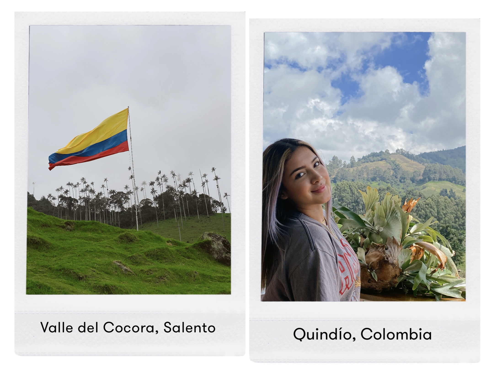
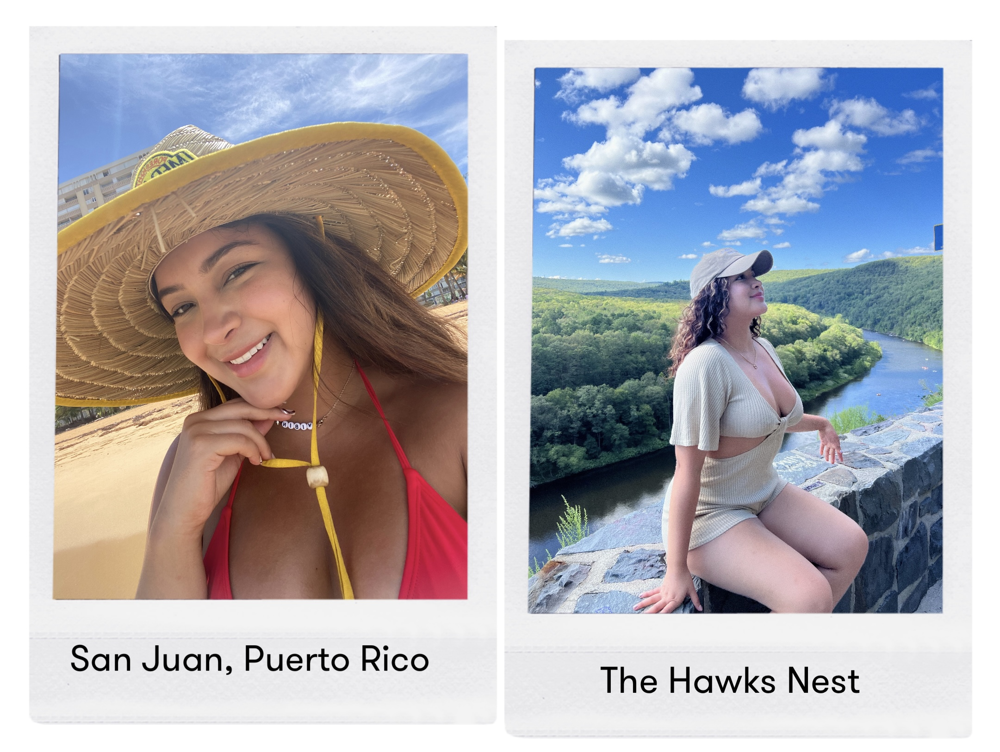
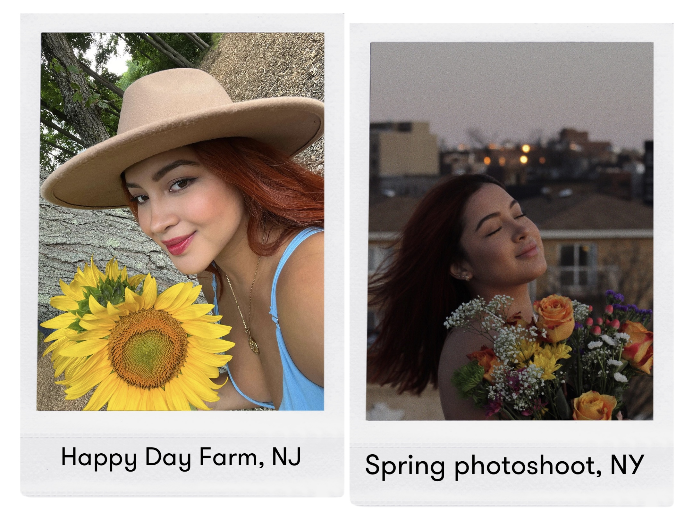
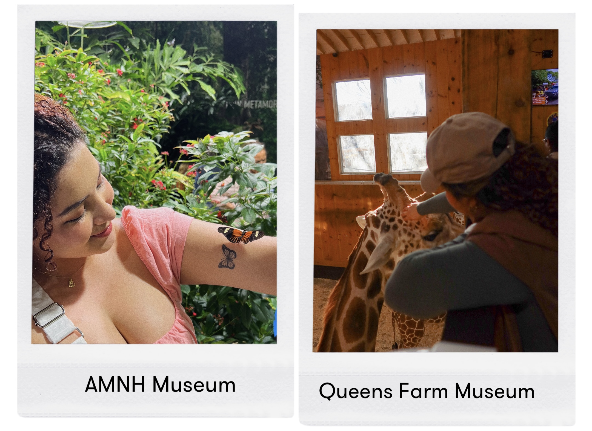

Hi! I'm Juliana Ceron but my relatives call me Juli. I'm from Cali, Colombia but I move to New York City almost six years ago. I'm 25 years old and currently finishing my Digital Marketing Associates Degree at BMCC.
I am obsessed with flowers and animals, they have a big space in my heart. However, my biggest passion is the photography, I really enjoy take pictures of everything surround me, I can find magic on simple details in our routine moments. I also like to travel a lot, watch the sunset from different spots and change my hair color.
Here are some pictures that I want to share with you.
Vacations in my favority country, Colombia has a lot of wonderful places, one of them are Salento in Quindio, even Disney based the movie Encanto in this magic village:
Puerto Rico stole my heart, I fell in love with their beautiful beaches. Also road trips around upstate NY is totally fun:
The sunflower is my favorite flower and I try to enjoy all the seasons, last spring I did a cool photoshoot:
Two of my favorite animals are the butterflies and giraffes, so this moments were very special for me:
Before you see this video I want to explain how amazing was for me when a pretty butterfly landed on my tattoo at the Davis Family Butterfly Vivarium, I will propably never forget this moment:
Copyright © 2024 Juliana Ceron - All Rights Reserved